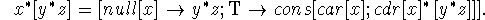
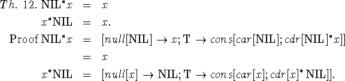

Suppose a function f is defined recursively by
(1) { }
where is an expression that in general contains f. Suppose
that is the set of n-tuples  for which f is
defined. Now let g and h be two other functions with the same
domain as f and which are defined for all n-tuples in . Suppose further that g and h satisfy the equation which
defined f. We assert that
for which f is
defined. Now let g and h be two other functions with the same
domain as f and which are defined for all n-tuples in . Suppose further that g and h satisfy the equation which
defined f. We assert that

for all  in . This is so, simply because
equation (1) uniquely determines the value that any function
satisfying it has for arguments in which in turn follows
from the fact that (1) can be used to compute for
in . This is so, simply because
equation (1) uniquely determines the value that any function
satisfying it has for arguments in which in turn follows
from the fact that (1) can be used to compute for
 in .
in .
We shall call this method of proving two functions equivalent by the name of recursion induction.
We shall develop some of the properties of the elementary functions of integers in order to illustrate proof by recursion induction. We recall the definitions
Only the definition of addition and the properties of conditional expressions
were used in this proof.
Proof Define  . It is easily seen that f(m,n) converges for all m and
n and hence is completely defined by the above equation and is
computable from it. Now
. It is easily seen that f(m,n) converges for all m and
n and hence is completely defined by the above equation and is
computable from it. Now
It is easily seen that the functions g and h defined by the equations g(m,n) =(m + n)' and h(m,n) = m' + n both satisfy the equation f. For example, it is clear that and Therefore, by the principle of recursion induction h and g are equivalent functions on the domain of where f is defined, but this is the set of all pairs of integers.
The fact that the above defined f(m,n) converges for all m and n is a case of the more general fact that all functions defined by equations of the form
converge. We are not yet able to discuss formal proofs of convergence.
In presenting further proofs we shall be more terse.
Proof Let Again f converges for all m, n, p. We have
Each of these forms satisfies the equation for f(m,n,p).
Setting m = 0 in Theorem 3 gives
so that if we had 0 + m = m we would have commutativity of addition.
In fact, we cannot prove 0 + m = m without making some assumptions that take into account that we are dealing with the integers. For suppose our space consisted of the vertices of the binary tree in figure 2, where
Fig. 2
m' is the vertex just above and to the left, and is the vertex just below, and 0 is the bottom of the tree. m + n can be defined as above and of course satisfies Theorems 1, 2, and 3 but does not satisfy 0+m = m. For example, in the diagram 0 + a = b although a + 0 = a.
We shall make the following assumptions:
1.
2. 
3.
which embody all of Peano's axioms except the induction axiom.
Proof By 3 and 4 as remarked above.


Now we shall give some examples of the application of recursion induction to proving theorems about functions of symbolic expressions. The rest of these proofs depend on an acquaintance with the Lisp formalism.
We start with the basic identities.
Let us define the concatenation of two lists x and y by the formula
Our first objective is to show that concatenation is associative.
Th. 11.
Proof
We shall show that and  satisfy the functional equation
satisfy the functional equation
First we establish an auxiliary result:
Now we write
and

From these results it is obvious that both and satisfy the functional equation.

Let
NIL satisfies this equation. We can also write for any list x
which also satisfies the equation.
Next we consider the function reverse[x] defined by
It is not difficult to prove by recursion induction that
and
Many other elementary results in the elementary theory of numbers and in the elementary theory of symbolic expressions are provable in the same straightforward way as the above. In number theory one gets as far as the theorem that if a prime p divides ab, then it divides either a or b. However, to formulate the unique factorization theorem requires a notation for dealing with sets of integers. Wilson's theorem, a moderately deep result, can be expressed in this formalism but apparently cannot be proved by recursion induction.
One of the most immediate problems in extending this theory is to develop better techniques for proving that a recursively defined function converges. We hope to find some based on ambiguous functions. However, Godel's theorem disallows any hope that a complete set of such rules can be formed.
The relevance to a theory of computation of this excursion into number
theory is that the theory illustrates in a simple form mathematical
problems involved in developing rules for proving the equivalence of
algorithms. Recursion induction, which was discovered by considering
number theoretic problems, turns out to be applicable without change
to functions of symbolic expressions.